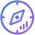
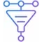
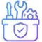
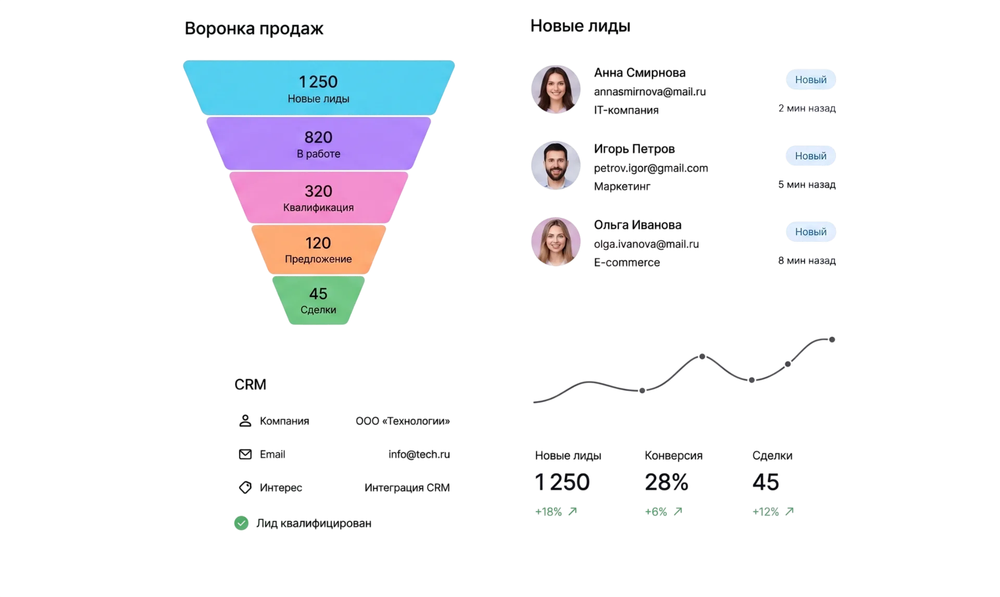
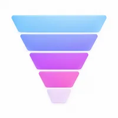
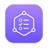
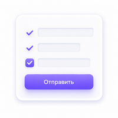
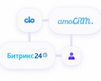
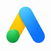
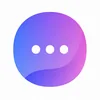

1248
лидов за месяц
+78% к прошлому периоду
Заявки для бизнеса Алматы
Собираем поток заявок для компаний Алматы: оффер, реклама, посадочные, формы и передача в CRM

Целевые лиды под ваш бизнес
Прозрачная аналитика
Сквозная интеграция с CRM
1248
лидов за месяц
+78% к прошлому периоду
28,4%
конверсия в заявку
+16% к прошлому периоду
4,6%
конверсия в сделку
+12% к прошлому периоду
612₸
стоимость лида
−23% к прошлому периоду
6,3x
окупаемость рекламы
+1,8x к прошлому периоду
98%
довольных клиентов
на основе 120+ проектов

В Алматы плотный рынок услуг и высокий шум в рекламе. Клиент быстро сравнивает предложения, поэтому важны ясный оффер, мобильная посадочная и отсев нецелевых обращений.
Настраиваем систему заявок под спрос города: каналы, лендинг или формы, аналитика и связка с отделом продаж. Без обещаний «гарантированного» объёма лидов и без копирования чужих креативов.
Работаем с компаниями из Алматы дистанционно и сопровождаем проект от настройки воронки до передачи заявок в работу. Офис — в Петропавловске; местного адреса в Алматы нет.
В Алматы сильный спрос на услуги, e-commerce, медицину, образование, ремонт и B2B. Конкуренция выше, чем в большинстве городов, поэтому лидогенерация опирается на качество оффера и воронки, а не только на бюджет.
Много игроков с похожими офферами. Отделяем предложение конкретным CTA, гео и сценарием заявки.
Большая доля обращений с телефона. Формы и квизы делаем короткими, с понятным следующим шагом.
Гео и посадочные настраиваем под зону обслуживания, чтобы не смешивать спрос из разных районов.
Ведём проекты для компаний Алматы дистанционно. Офис — в Петропавловске.
Типовые задачи компаний Алматы, с которыми собираем систему заявок.
Усиливаем оффер и посадочную, ограничиваем гео и отсекаем нецелевой трафик на входе.
Сверяем креатив, лендинг, форму и скорость ответа. Ищем точки потерь до CRM.
Собираем сценарий уточнения задачи, чтобы менеджер получал более готовый лид.
Подключаем передачу в CRM или единый канал обработки со статусами.
Проектируем воронки под продукт и аудиторию компаний Алматы


Создаём формы и квизы под сбор заявок с гео и задачей клиента

Настраиваем обработку заявок и CRM, чтобы обращения из Алматы не терялись

Изучаем нишу, аудиторию и конкурентов

Строим маршрут клиента и точки касаний

Формы, квизы, лендинги, креативы
Настраиваем рекламу и проводим тесты

Снижаем стоимость лида, растим объёмы

Прозрачные отчёты и рекомендации

Поиск и РСЯ

Поиск и КМС
Реклама и лид-формы

Реклама и лид-формы
Каналы и боты

SEO, YouTube, партнёры
Контекстная реклама в Алматы — один из каналов. Органический поток: SEO в Алматы. Базовая услуга: лидогенерация.
Получите стратегию лидогенерации под нишу и географию Алматы
Лидогенерация в городах Казахстана. Откройте страницу своего города или вернитесь к базовой услуге. Географию и каналы подбираем под зону обслуживания компании.
Готовы обсудить систему заявок для компании в Алматы? Оставьте заявку или напишите — разберём нишу, гео и схему воронки.
Отправьте заявку
Укажите нишу и зону работы в Алматы — предложим схему запуска.
Наш офис: Казахстан, Петропавловск, ул. М. Жумабаева, 109, 6 этаж, офис 606а.
Разберём каналы, посадочные, формы и обработку лидов под задачи компании в Алматы.
Обсудим систему заявок для Алматы?
Оставьте заявку — разберём каналы, воронку и обработку лидов под задачи в Алматы